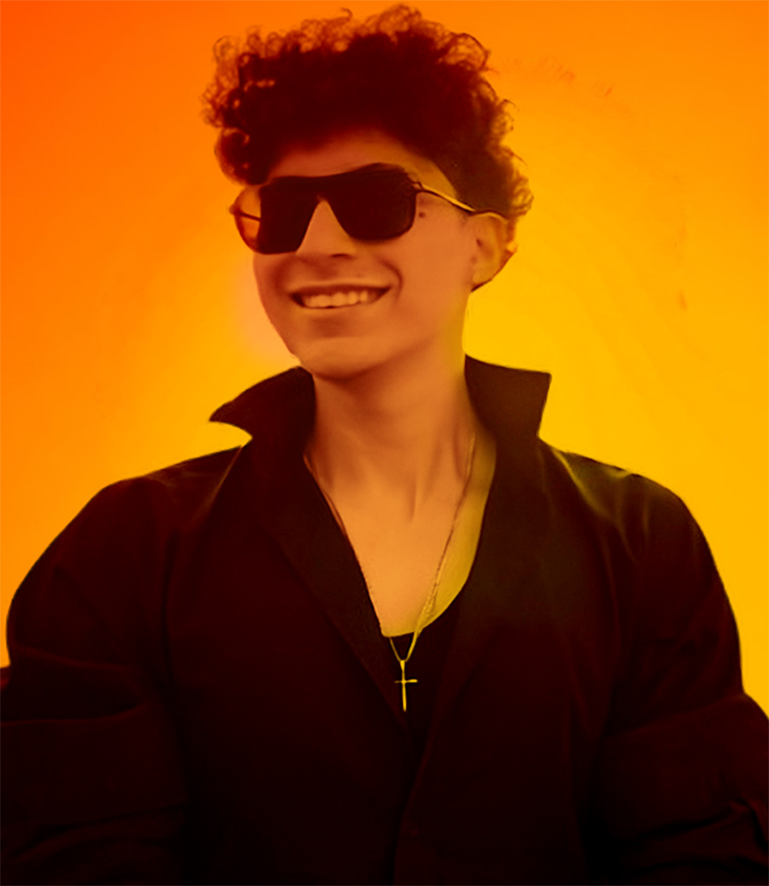
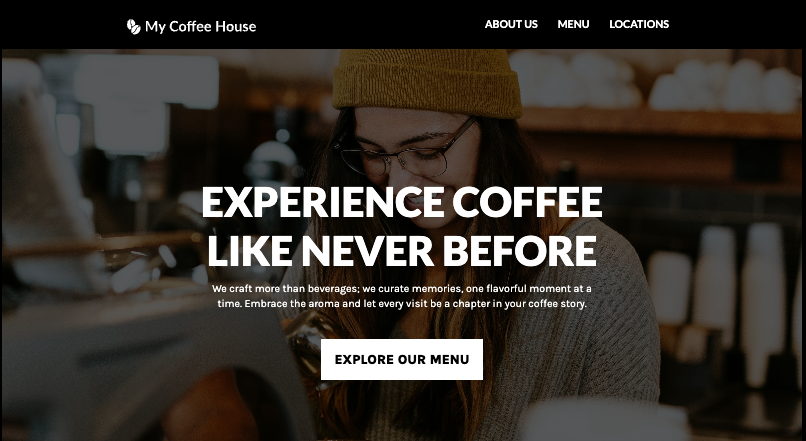
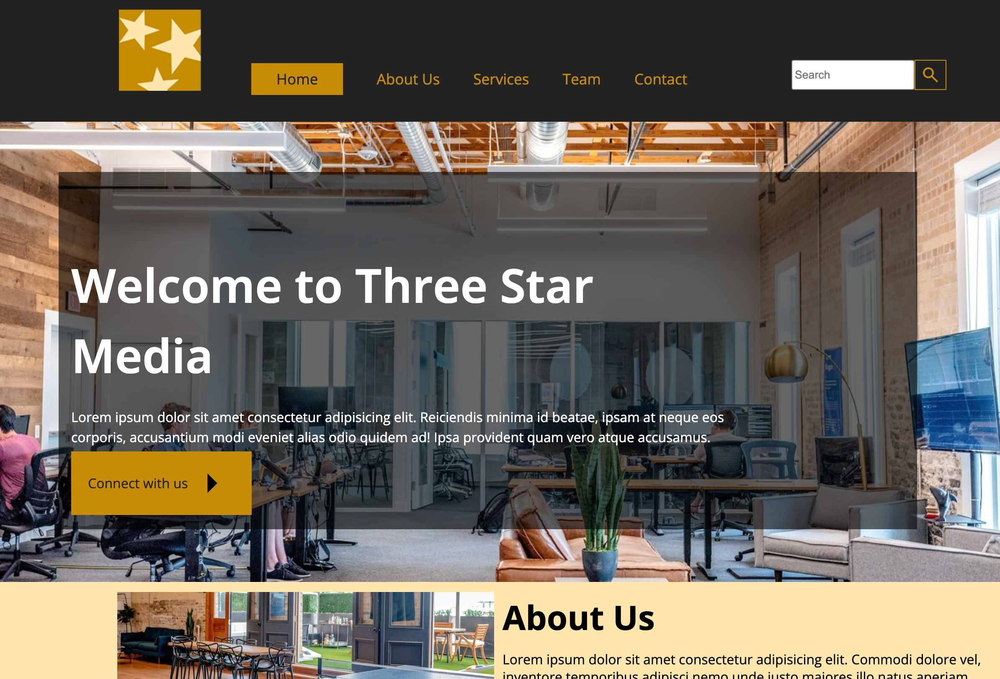
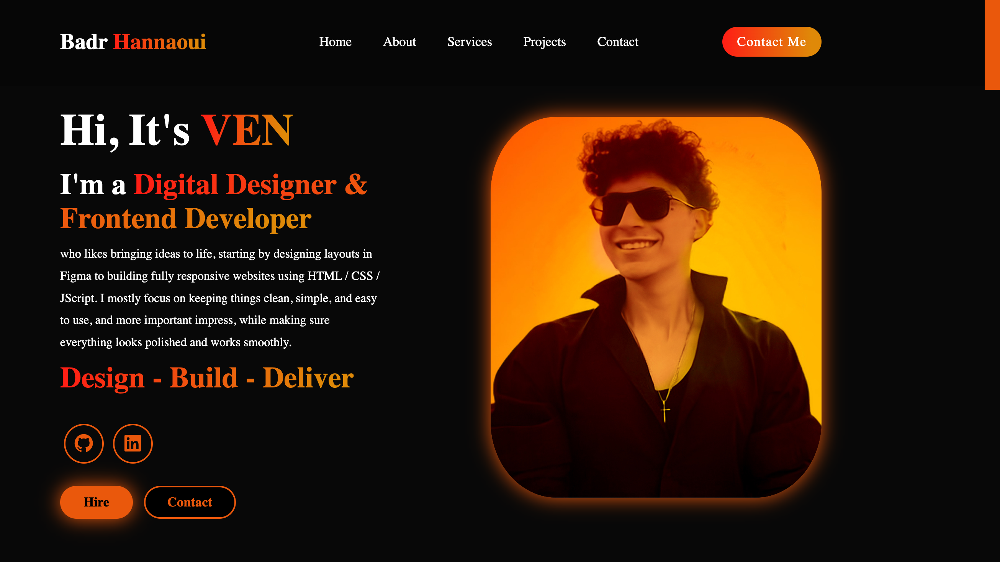

Hi, It's VEN
I'm a Digital Designer & Frontend Developer
who likes bringing ideas to life, starting by designing layouts in Figma to building fully responsive websites using HTML / CSS / JScript. I mostly focus on keeping things clean, simple, and easy to use, and more important impress, while making sure everything looks polished and works smoothly.
Design - Build - Deliver

About Me
I started with design because I enjoyed making things look good, but I quickly became interested in how everything works behind the scenes. That curiosity led me to develop both design and front-end skills, allowing me to take projects from the initial concept all the way to a fully built, functional product.
Read MoreServices
UI / UX Design
I design strategic, user-centered digital experiences that balance aesthetics with functionality. By combining user research, wireframing, and interface design, I create intuitive and scalable solutions that improve usability and engagement. I prioritize accessibility, responsiveness, and consistency to deliver polished, real-world-ready products that meet both user needs and business goals.
Frontend Development
I develop responsive and scalable web interfaces using HTML, CSS, and Bootstrap. My approach focuses on clean, maintainable code, performance optimization, and accessibility standards. I bridge design and development to ensure every interface is visually consistent, user-friendly, and functional across all screen sizes.
Digital Design
I create visually compelling digital assets that align with brand identity and communication goals. My work includes designing graphics, banners, and visual content using tools like Adobe Illustrator and Photoshop, with a strong focus on layout, typography, and color theory. I ensure every design is both aesthetically refined and strategically effective, enhancing user engagement across web and digital platforms.
Projects

Coffee Shop
I created the coffee shop website from scratch, focusing on a warm and inviting design with clear navigation. I used HTML and CSS to build a responsive layout that works smoothly across all devices

Digital Agency
I built the digital agency website from scratch to present services in a clear and professional way. I focused on a modern layout, strong visuals, and responsive design using HTML and CSS to create a polished and engaging experience.

Animal Shelter
I created the animal shelter website from scratch, focusing on a clean and accessible design that highlights adoption stories and key information. I built it using figma to design the wireframes then coding with HTML, CSS, and Bootstrap to ensure it is responsive, user-friendly, and easy to navigate.

Portfolio
I built my portfolio website from scratch to showcase my projects and skills in a clean and professional way. Using HTML, CSS, and Bootstrap, I created a responsive and well-structured layout with a strong focus on usability and visual consistency.